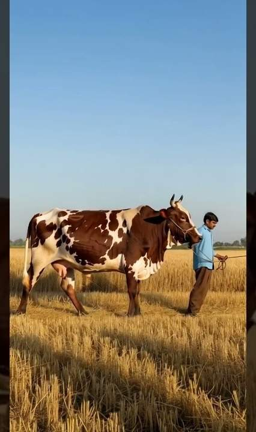
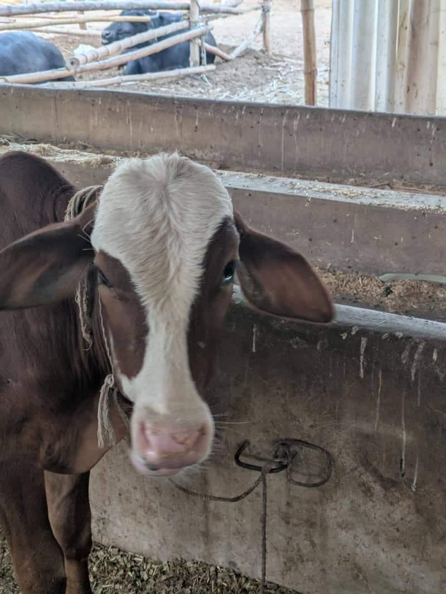

Introduction
The Cholistani — also called Rohela — is the dual-purpose breed of the Cholistan desert in southern Punjab, Pakistan. It gives milk and meat from some of the harshest grazing country in the world.
Where the desert offers little but heat and thorny grazing, the Cholistani still gives milk and grows. One breed supports the desert family twice: milk for the home and market, and strong animals for meat and sale.
Cholistani at a Glance
| Origin | Cholistan Desert, southern Punjab, Pakistan |
|---|---|
| Also called | Rohela |
| Type | Dual-purpose (milk + meat) |
| Milk per lactation | 1,200–1,800 litres |
| Weight | Bulls 450–500 kg; cows 350–400 kg |
| Coat | Generally white with reddish-brown or dark patches; recognised colour types below |
| Price in Pakistan (indicative) | PKR 200,000–500,000 per animal |
Varieties & Types of Cholistani
The breed is recognised in four colour types, plus the standard Cholistani (Rohela) form:
- Gulabi Nukra — Pure white coat with pink nose, lips and hooves — the prized "Nukra" form of the breed.
- Patella — Red & white coat pattern.
- Ablukh — Black & white coat pattern.
- Panda — Black with white patches.
- Cholistani / Rohela (standard form) — The standard form of the breed — generally white with reddish-brown or dark patches.
Characteristics

- Desert Frame — A strong, medium-large frame built to walk far and graze sparse desert land.
- Coat Patterns — White base with reddish-brown or dark patches; the four colour types are prized by breeders.
- The Hump — A clear zebu hump — the breed is fully heat-adapted.
- Hardiness — Gives milk and grows where feed and water are poor.
Strengths
- Dual purpose — milk and meat from one breed
- True desert hardiness
- Good growth rate
- High milk for a desert breed
- Colour types prized at shows and mandis
Keep in Mind
Milk varies with the type and feeding — always check the individual cow’s milk record before buying. Proven milkers and breeding or show bulls cost more.
Milk & Meat Production
A Cholistani cow gives 1,200–1,800 litres of milk per lactation (about 10 months) — high milk for a desert breed.
Bulls reach 450–500 kg and cows 350–400 kg, so the breed also produces good meat animals. A dual-purpose breed supports the family twice: milk and meat.
Price & Buying Tips
Indicative price in Pakistan: PKR 200,000 – 500,000 — per animal, depending on weight, age and milk yield. All prices are indicative and move with the market.
There is no official fixed price — it depends on weight, age, milk yield and type. Proven milkers cost more, pregnant females cost more, and breeding & show bulls cost the most.
Before You Buy — Checklist
- Milk record of the mother
- Frame, legs & hooves sound
- Udder — 4 working quarters
- Body condition score 3+
- Vaccination & deworming record
- Pregnancy status confirmed
- Temperament calm
- Weight on scale, not by eye
Photos of the Breed

Frequently Asked Questions
What is the other name of the Cholistani breed?
Rohela — Cholistani and Rohela are two names of the same dual-purpose breed of the Cholistan desert.
How much milk does a Cholistani cow give?
About 1,200–1,800 litres per lactation (roughly 10 months) — high milk for a desert breed.
What are the types of Cholistani cattle?
Four recognised colour types — Gulabi Nukra (pure white, pink nose/lips/hooves), Patella (red & white), Ablukh (black & white) and Panda (black with white patches) — plus the standard Cholistani/Rohela form.
What is the price of a Cholistani animal in Pakistan?
Indicatively PKR 200,000–500,000, depending on weight, age, milk yield and type; proven milkers and show bulls cost more.
Free Guide & Related Breeds
All 25 breeds — with bull, cow and calf photos, varieties, production charts and Urdu summaries — are in our free 196-page pictorial guide:
📖 Download the Free Cattle Breeds Guide (PDF)
Related breeds: Sahiwal · Tharparkar · Dhanni
⚠️ Important: Breed figures on this page are typical published ranges, and prices are indicative only — they change with the market, the animal's age, records and pregnancy status. Always inspect an animal in person (or with your veterinarian) before buying.
✍️ Written by Dr. Shahid Bilal Depal, DVM (PVMC RVMP #15068)
This guide is for educational purposes. Consult a registered veterinarian for diagnosis and treatment.